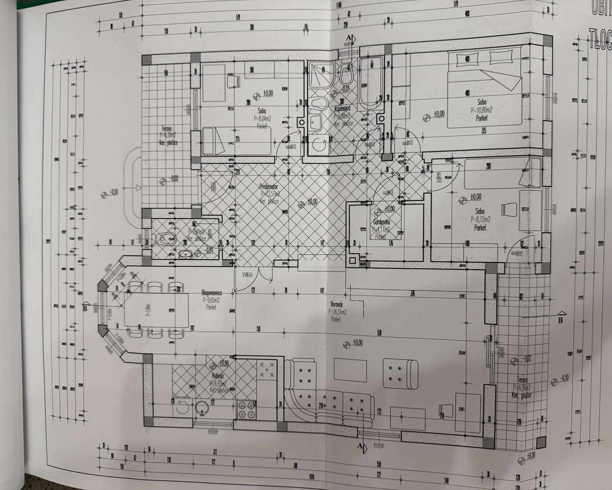

Prostran i funkcionalan prostor za svakodnevni život i rad

spavaće sobe — 10,80 m² + 8,04 m² + 8,12 m²
kupaonica — 5,88 m²
tehnička prostorija — 4,11 m²
smočnica — 2,40 m²
dnevni boravak 25,51 m², blagovaonica 9,65 m² i kuhinja 6,93 m²
pristup iz tehničke prostorije
Središnji dnevni prostor namjerno je projektiran prostrano kako bi, osim za svakodnevni obiteljski život, pružao dovoljno prostora za ugodna druženja, proslave i veća okupljanja.